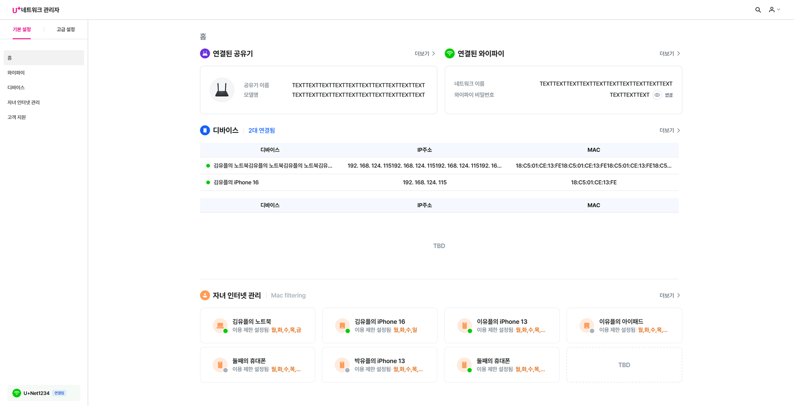
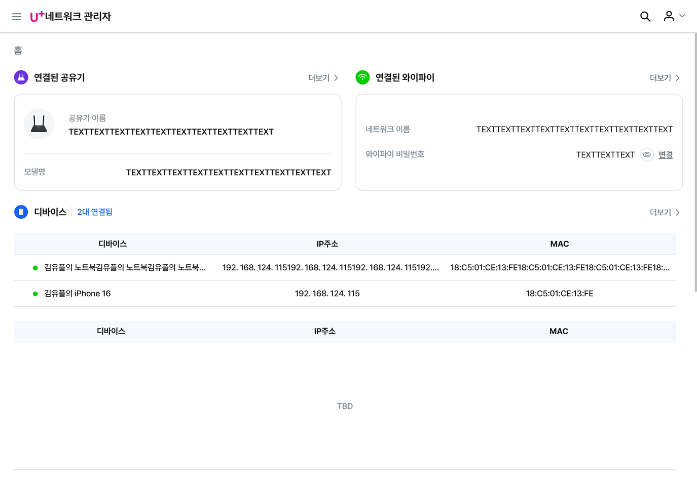
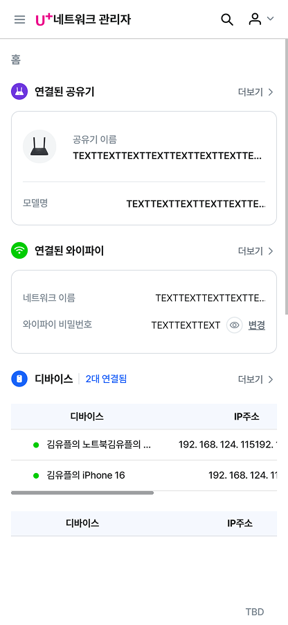
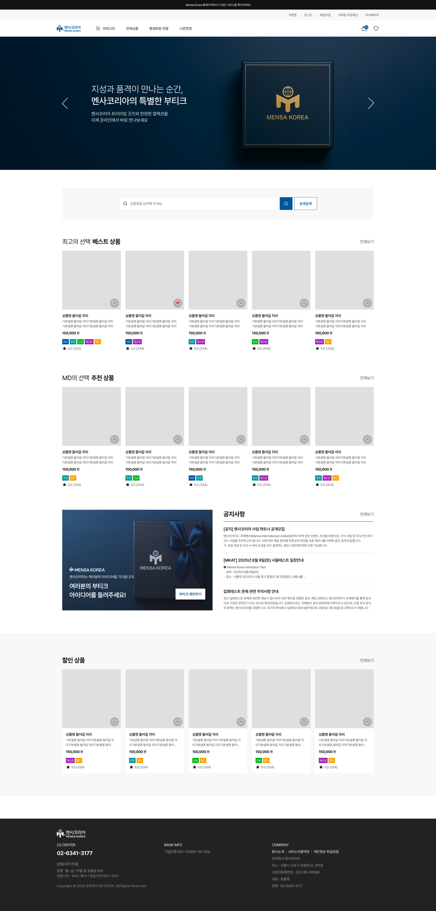
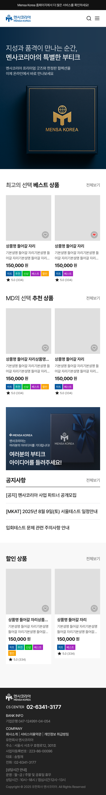
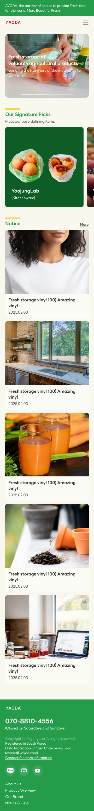
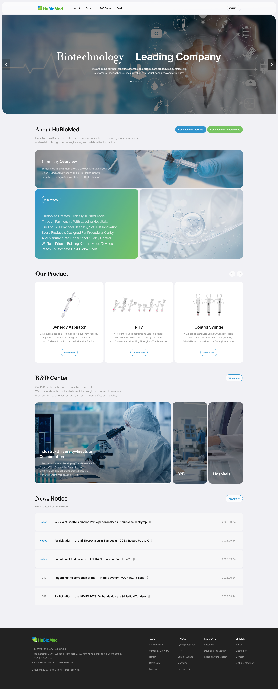
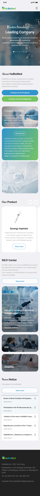

Portfolio · Responsive Web
Responsive
Web
PC, 태블릿, 모바일 —
모든 화면에서 완벽하게.
Scroll Down
0
Breakpoints
0
Years Exp.
0
% Cross-Device
반응형, 처음부터 끝까지
PC · 태블릿 · 모바일 — 모든 디바이스에서 완벽하게 동작하는 UI를 구현합니다.
그누보드·영카트 템플릿 작업부터 GSAP 인터랙션, 특수 검사지 디자인까지
어떤 디자인이든 반응형으로 완성합니다.



01
PC · Tablet · Mobile
PC, 패드, 모바일
전부 완벽하게.
단순히 모바일만 대응하는 게 아닙니다.
1920 · 1440 · 1280 · 1024 · 768 · 480 — 모든 브레이크포인트를 직접 설계합니다.
- PC · 패드 · 모바일 3단계 브레이크포인트 완전 대응
- px, %, vw, clamp() 등 상황에 맞는 유연한 단위 활용
- CSS Grid · Flexbox를 활용한 반응형 레이아웃 설계
- 태블릿 해상도(768~1200px) 별도 분기 처리
02
특수 디자인 · 검사지 · 반응형
특이한 디자인도
코드로 완성합니다.
검사 결과 페이지처럼 복잡하고 특수한 레이아웃도
픽셀 퍼펙트하게 퍼블리싱합니다.
- 검사 결과에 따른 다양한 분기 레이아웃 퍼블리싱
- 특수한 디자인 가이드도 정확하게 코드로 구현
- Swiper 기반 인터랙티브 결과 탐색 UI 구현
- 모든 결과물 반응형 완전 대응


03
그누보드 · 영카트 · 스킨 퍼블리싱
그누보드·영카트
스킨도 납니다.
오픈소스 CMS인 그누보드와 영카트에서
커스텀 스킨을 직접 퍼블리싱한 경험이 있습니다.
- 그누보드 게시판·회원·메인 스킨 커스텀 제작
- 영카트 쇼핑몰 상품·카트·결제 스킨 반응형 퍼블리싱
- PHP 템플릿 구조 이해 기반 스킨 커스터마이징
- PC · 모바일 완전 반응형 대응

인터랙션 영상
첨부 예정
04
GSAP · ScrollTrigger · Custom Animation
살아있는 인터랙션,
직접 구현합니다.
스크롤 기반 연출, 글자 등장, 시차 효과 등
GSAP을 활용한 다양한 인터랙션을 직접 코딩합니다.
- GSAP ScrollTrigger 기반 스크롤 연동 애니메이션
- 핀 고정·시차(Parallax)·텍스트 등장 효과 구현
- CSS keyframe + JS 조합의 Custom Animation
- 모든 인터랙션 반응형 완전 대응


05
풀스크린 · 아이템 쇼케이스 · 트렌디 UI
꽉 찬 화면,
트렌디하게 완성.
요즘 유행하는 풀스크린 배경에 아이템을 크게 보여주는
임팩트 있는 홈페이지도 퍼블리싱 경험이 있습니다.
- 뷰포트 꽉 채우는 풀스크린 히어로 레이아웃 구현
- 배경·텍스트·아이템의 레이어 구조 설계
- object-fit, background-size 활용한 이미지 최적화
- PC · MO 모두 임팩트 있는 비주얼 완전 반응형 대응


06
기업소개 · 의료 · 뷰티 · IT · 반응형
어떤 업종도,
소개 페이지로.
의료·뷰티·IT 등 다양한 업종의 기업 소개 페이지를 퍼블리싱하며
각 브랜드 톤앤매너를 코드로 정확하게 구현했습니다.
- 의료·뷰티·IT 등 다양한 업종 기업소개 페이지 퍼블 경험
- 브랜드 아이덴티티에 맞는 컬러·타이포 시스템 구현
- Swiper 슬라이드·스크롤 인터랙션 포함 생동감 있는 UI
- PC · 태블릿 · 모바일 완전 반응형 대응